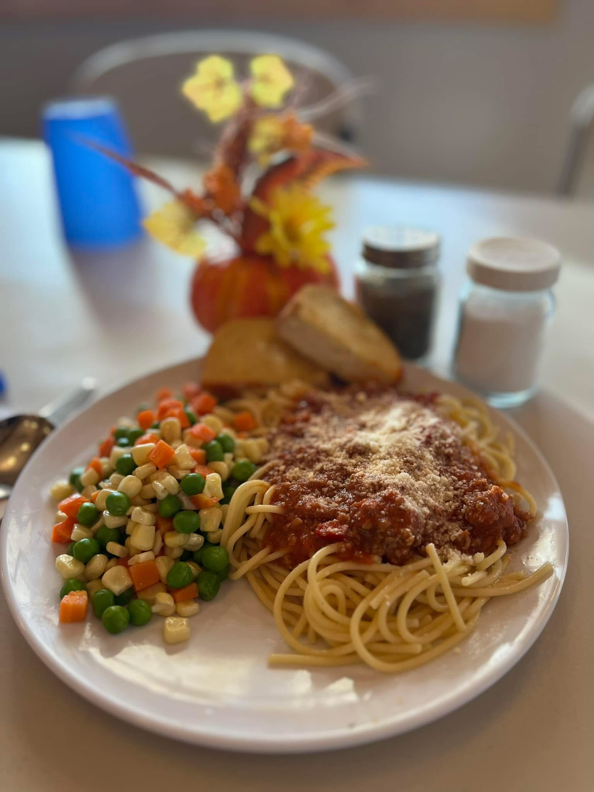
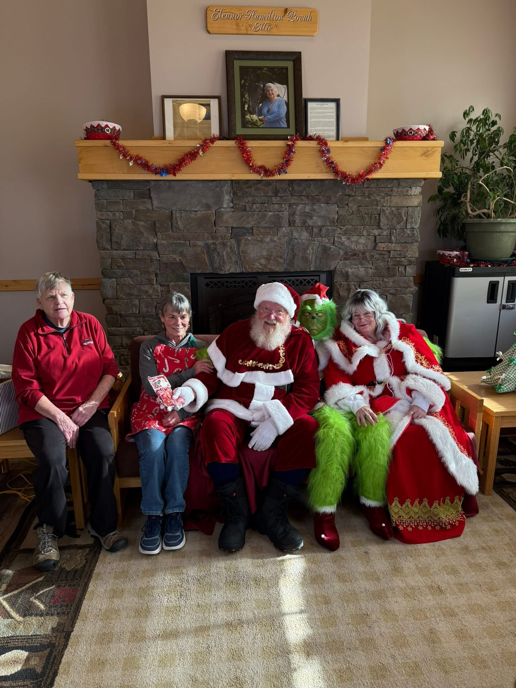
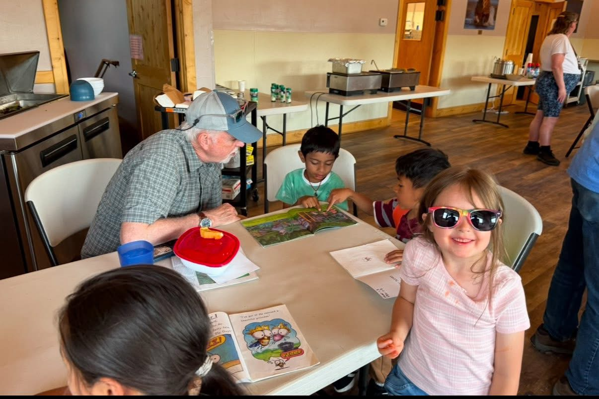
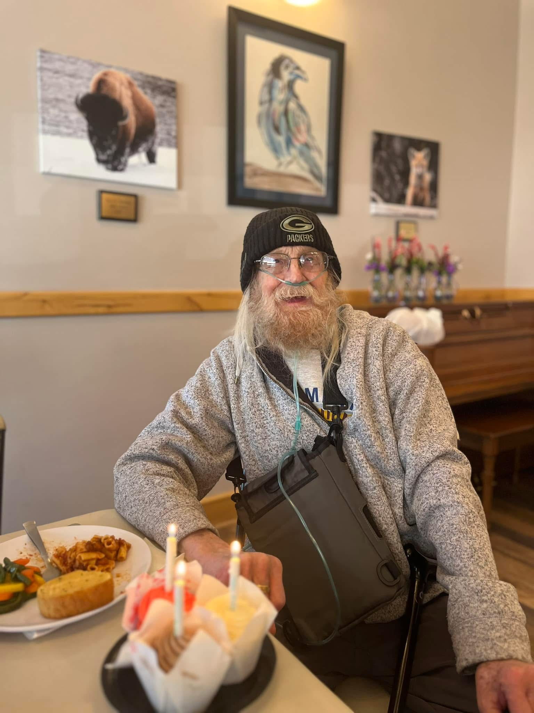
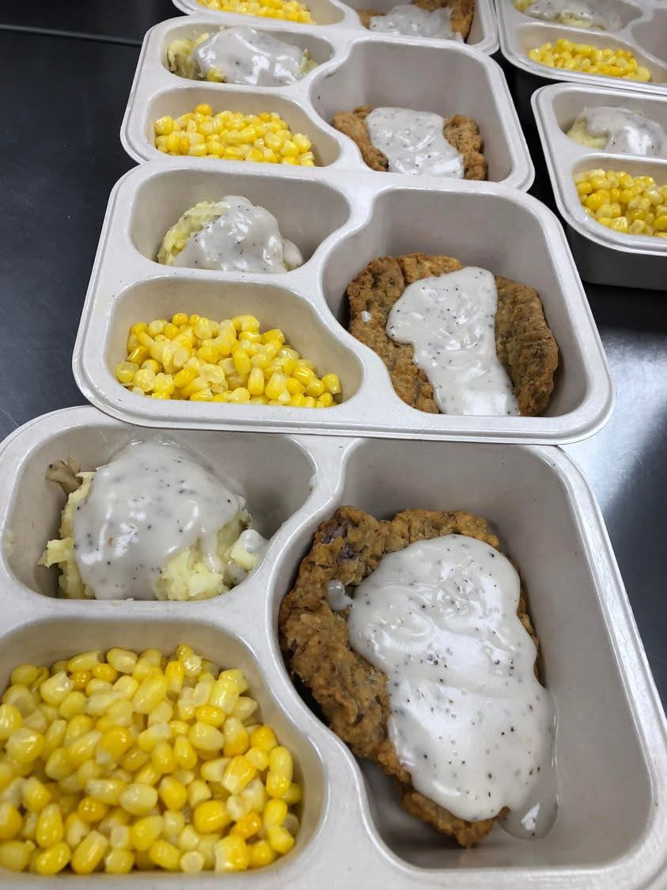
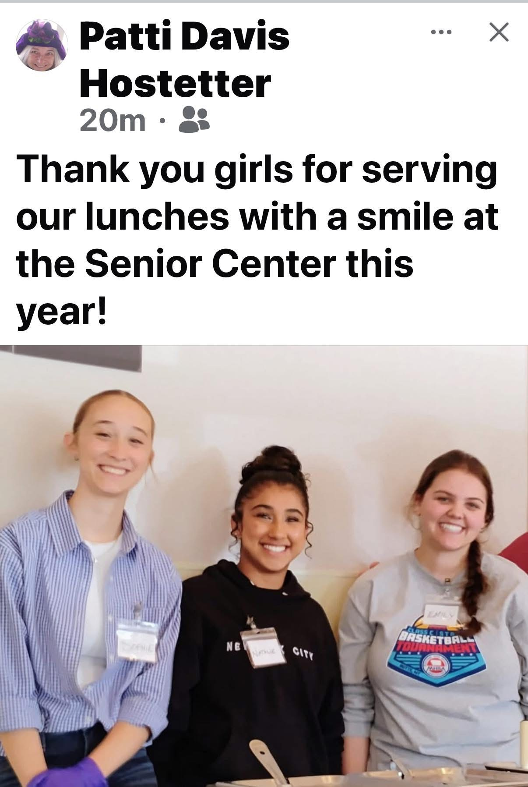

Why I Love The Senior Center
I find great fulfillment in helping others and making a positive impact in my community. I am blessed to be able to cook meals and serve them, and on top of that, hear the amazing stories of their lives. Every conversation teaches me something new and reminds me of the importance of kindness, compassion, and human connection. Seeing the smiles on their faces and knowing that I can brighten someone's day brings me a deep sense of purpose. Being able to serve others in this way is both rewarding and inspiring, and I am grateful for the opportunity to give back to my community.
Key Elements:
- Spreading Love and Positivity
- Serving Others
- Communicating Effectively
- Building Relationships
- Community and Culture
Visual Gallery







Featured Video
If the video still does not load, watch it directly on YouTube: Watch video on YouTube.
Happiness Comparison
Compare senior citizen happiness when receiving a community lunch versus staying at home, with a toggle for when high school students help out.